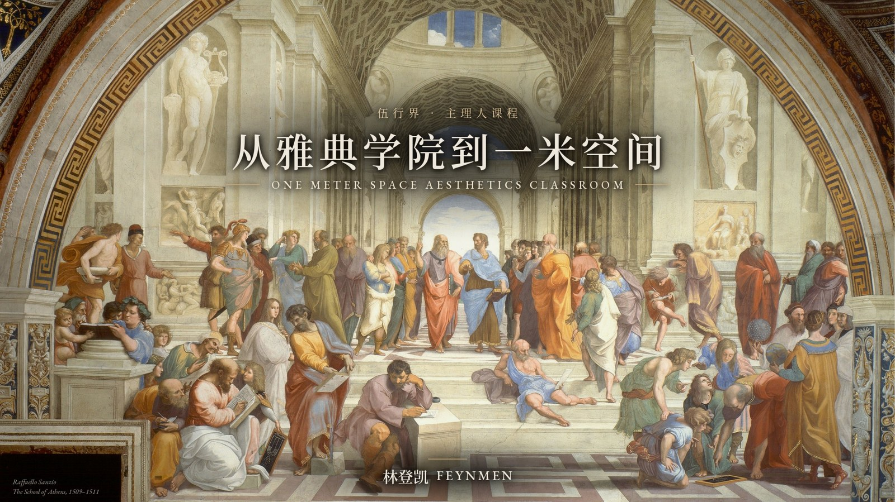
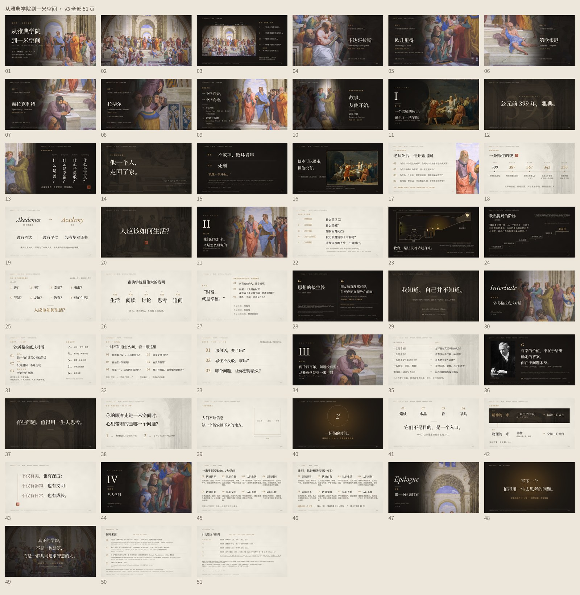
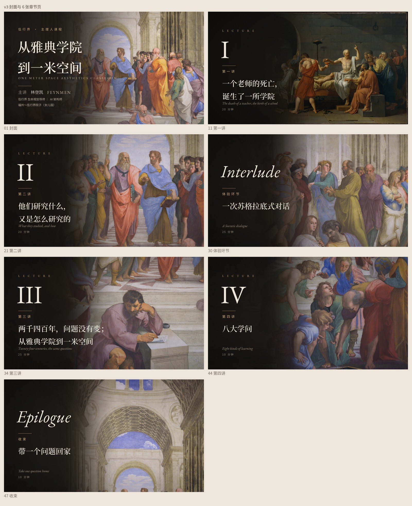
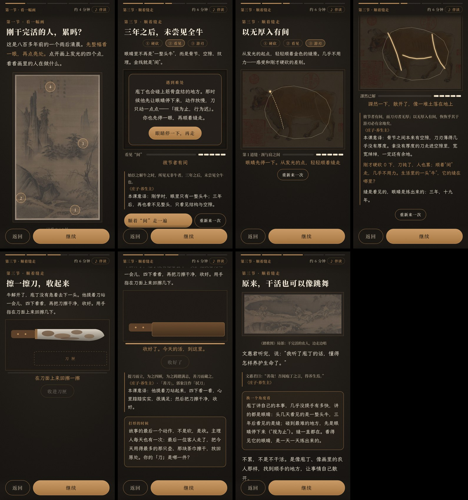
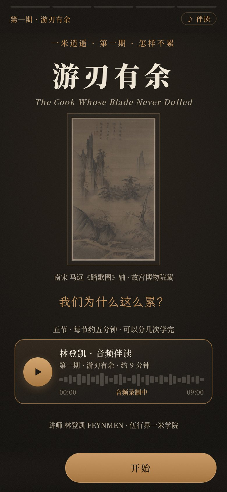
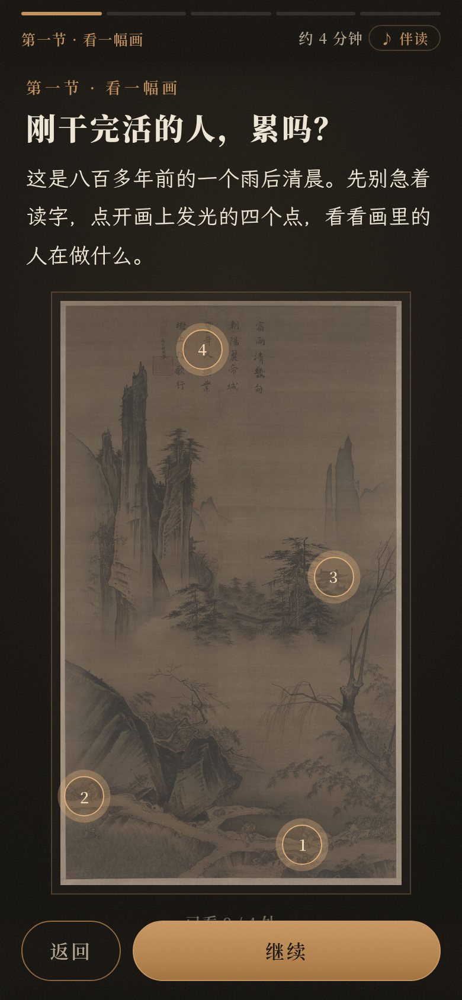

Case · Courseware
课程与互动课件
把现场讲授做成可点击、可带走的数字教材： 《从雅典学院到一米空间》51 页叙事课件，以及庄子系列手机互动样稿。 课堂大屏与个人手机用同一套内容结构。
具体功能
从封面叙事到手机热区，覆盖讲授、体验与带走复盘。
- 现场课件数字化 板书与讲述结构整理成网页章节，课后可反复打开复盘。
- 可点击互动 章节、注释点与段落跳转可点，比静态 PDF 更适合边看边跟。
- 手机优先样稿 庄子系列以竖屏热区、步骤引导与底部操作设计，方便课间演示。
- 雅典学院主题叙事 《从雅典学院到一米空间》把历史图像与当代一米空间并置讲解。
- 讲次与篇章分区 按封面、四讲、体验环节与收束组织，课前预习与课后检索都清楚。
- 可带走的教材形态 同一份内容可在教室大屏与个人手机上延续，不依赖单次投影。
界面预览
雅典学院课件全貌与庄子互动样稿实机画面。






课件与互动样稿用于现场讲授与内部演示，暂无对外公开的试读地址。 有稳定公开入口后，会在本页增加「打开线上版」。